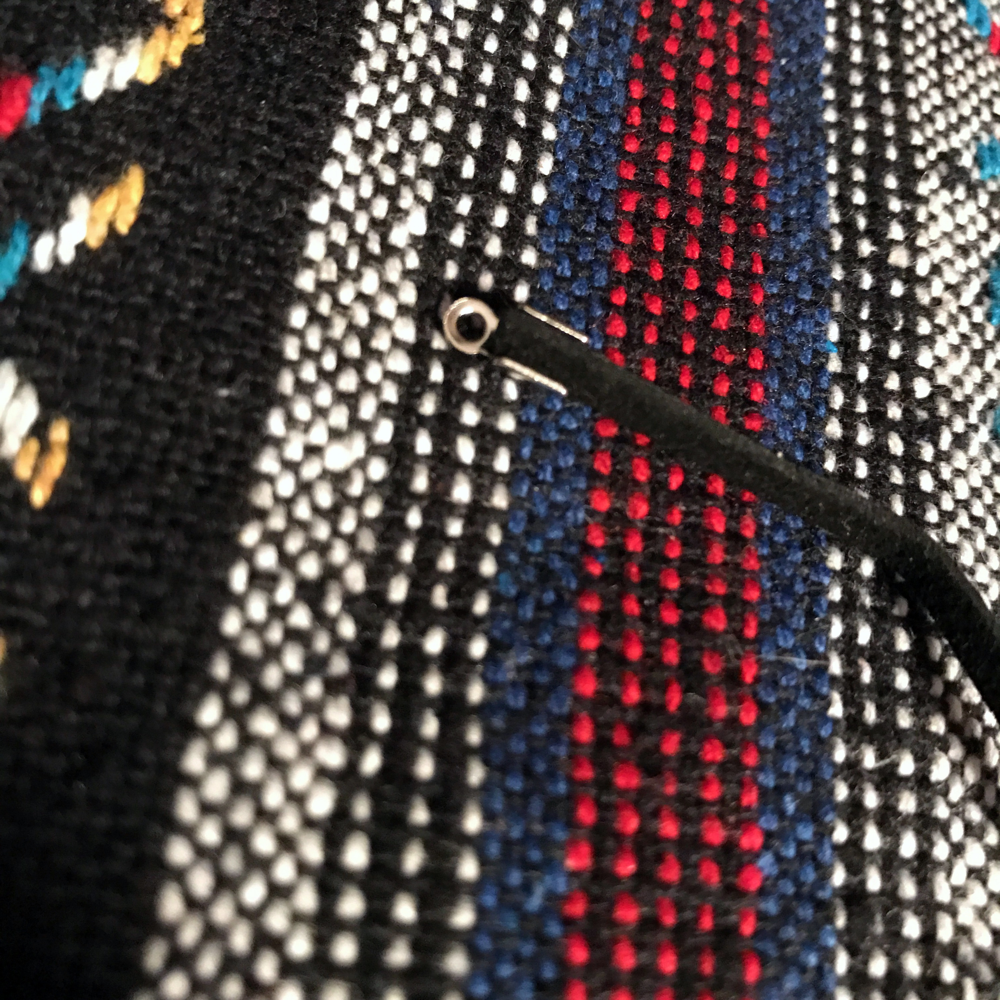
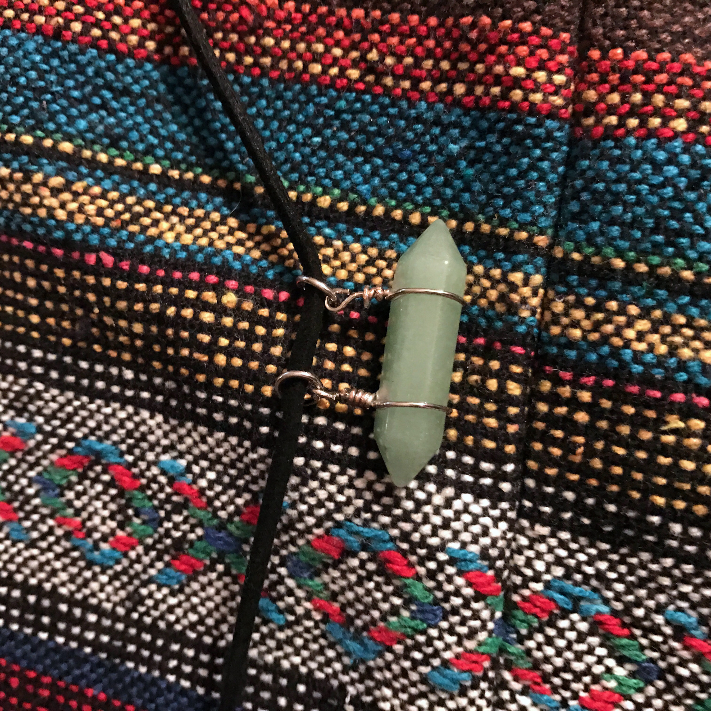
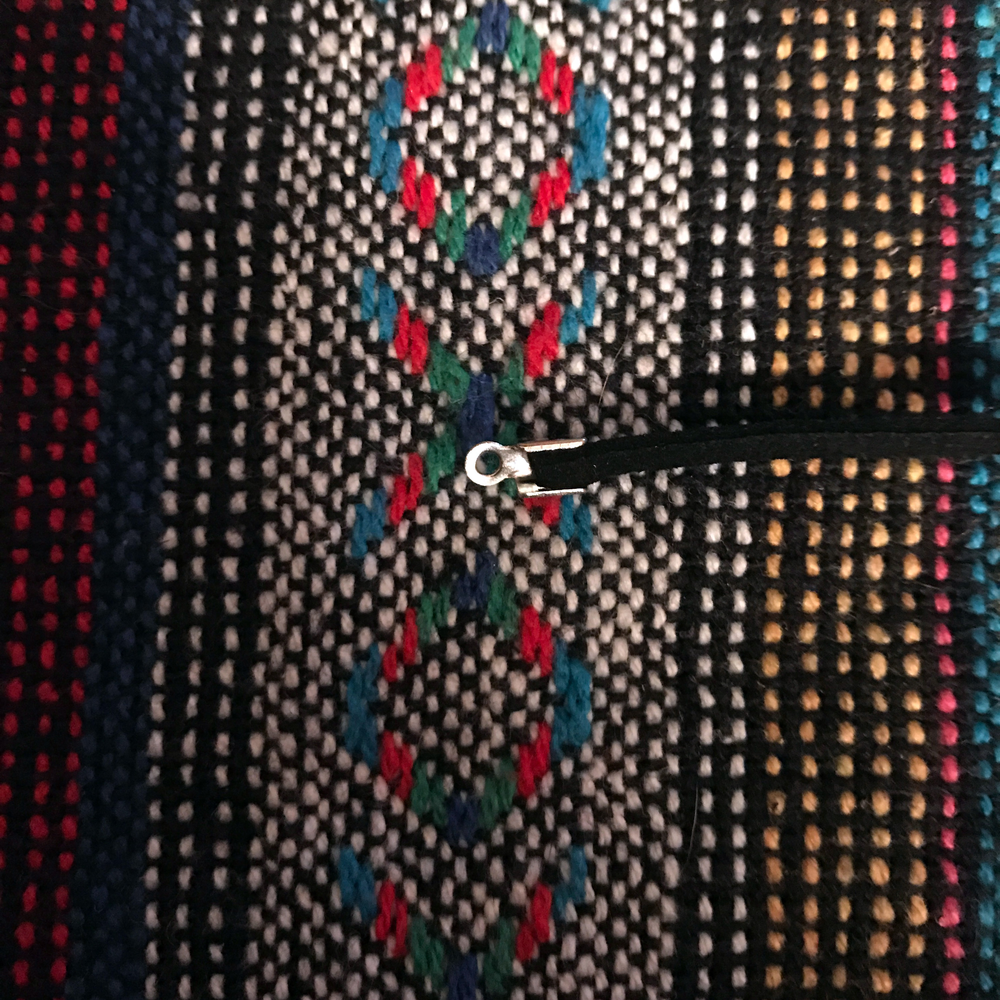
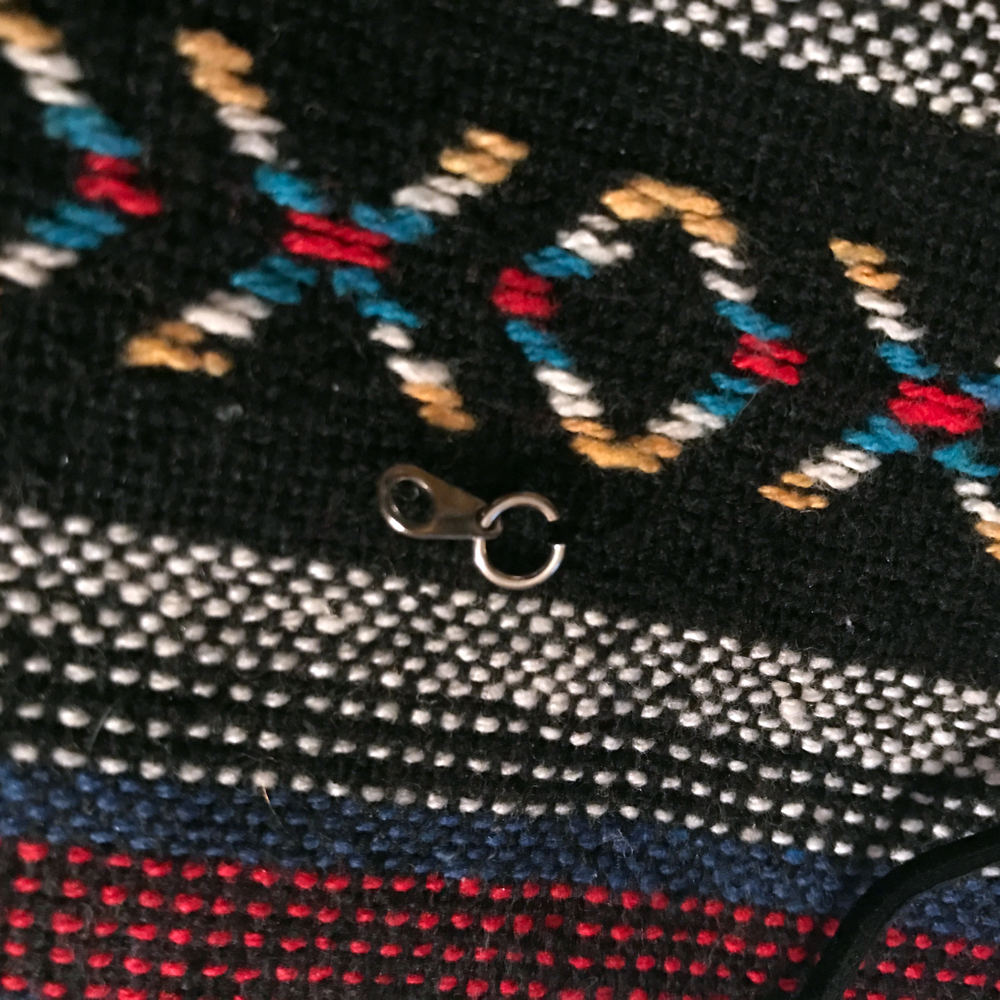
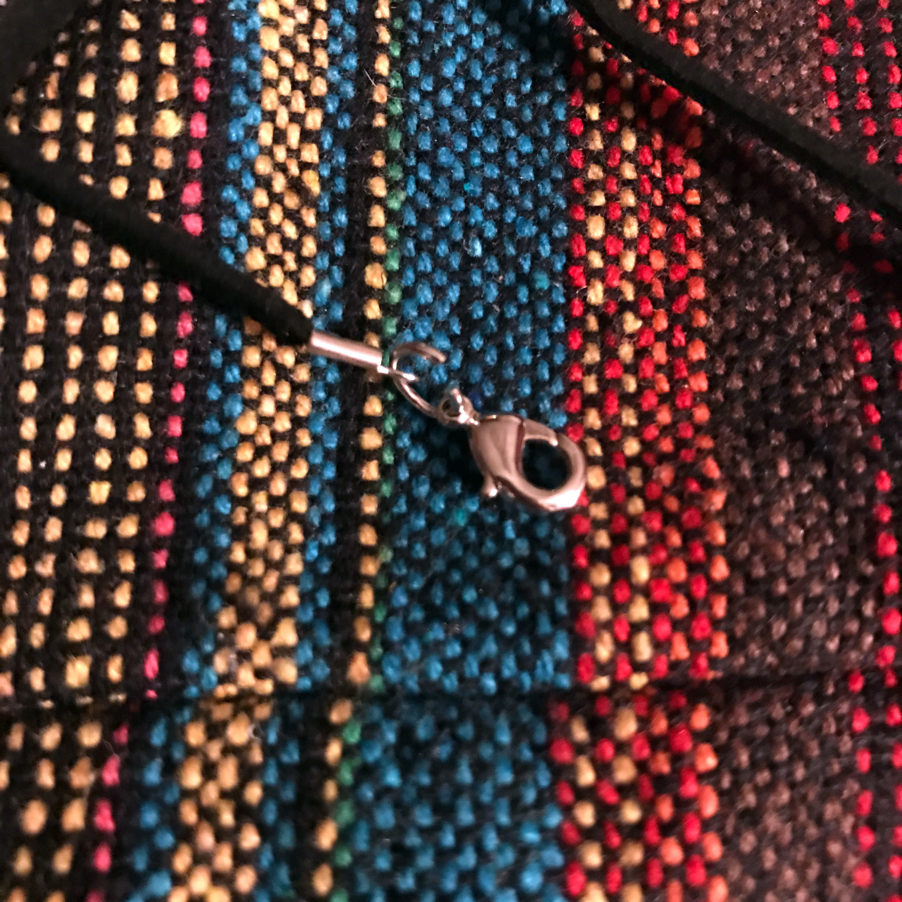

Necklaces
September 15th, 2017
How to Design a Basic Choker
Chokers were once a popular necklace jewelry that women with power would wear dating back to the 1800’s. They would do this to ensure the protection of their neck. This had once been a fad that eventually had gone out of style. In our day in age now chokers are again becoming back in style but not for the same reasons they were before, now a days they are for style that many younger generations are trending again. In this section we will start off by displaying how to easily create your own one of a kind basic choker.
Materials
Black Cord
Caps
Accent Piece
Scissors/Plyers
Clamps
Step By Step
1. Measure the length of your neck then leave about a quarter inch to play with. Leave this so you dont make it to small and after choke yourself.

2. At this point take one of the caps and wrap it around the end and clamp them down into place.
3. Then on the other side, slide your pendant or accent piece on to the necklace. When picking this piece please choose and appropriate piece that will not be to heavy and suffocate you.
4. Once the pendant is on, tie the other end the pervious way explained in step two.
5. This is the more challenging part now, take this twezzers and open the clasp circle. Once opened, slide the clasp and the other side and close the clasp shut. This way you have one of two hooks down.
6. Lastly do the previous step explained to the other side of the necklace chain.
7. All done
Tips
In concerns to making a necklace the hardest part is the caps because the are so small and hard to push down so BE CAREFUL!